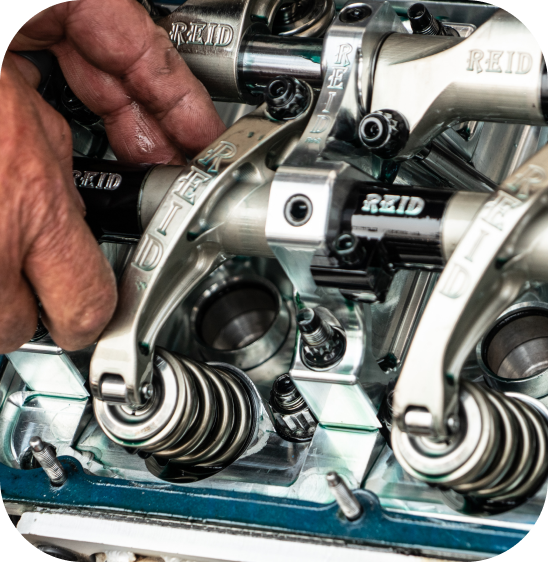
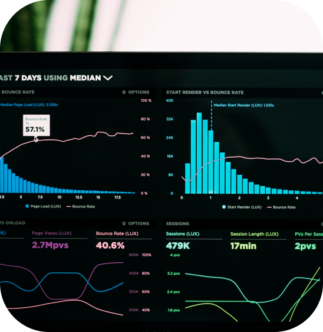

It enables you to..
Increased Efficiency and Productivity
Production Downtime Analysis helps identify and address the root causes of downtime, allowing for process optimization and the reduction of time-wasting issues. By minimizing interruptions, organizations can significantly increase their efficiency and productivity.
Cost Reduction
Identifying and resolving the reasons behind production downtime can lead to substantial cost savings. By preventing unplanned downtime and minimizing maintenance and repair costs, businesses can allocate resources more efficiently.
Improved Predictive Maintenance
Downtime analysis enables predictive maintenance by identifying patterns and trends in equipment failures. This proactive approach helps prevent breakdowns, extends equipment lifespan, and minimizes costly emergency repairs


Data-Driven Decision-Making
Production Downtime Analysis provides data-driven insights that guide decision-makers in making informed choices to improve operations. It helps in optimizing processes, allocating resources effectively, and enhancing overall equipment efficiency (OEE).
How it works for a factory:
-
Real-time Downtime MonitoringImplement IoT sensors and AI technology to monitor production lines and equipment in real-time. This allows you to track downtime incidents as they occur and capture essential data.
-
Downtime CategorizationCategorize downtime incidents into various types, such as equipment failures, maintenance, setup changes, quality control issues, operator errors, and more. This categorization provides a clear understanding of the root causes.
-
Optimization StrategiesBased on the analysis, develop optimization strategies to reduce downtime. These strategies may involve process improvements, equipment upgrades, training, and better scheduling.
-
Detailed Data CollectionGather comprehensive data during downtime events, including timestamps, reasons, duration, and affected equipment. This detailed information is vital for in-depth analysis.
-
AI-driven Downtime AnalysisEmploy AI algorithms to analyze the collected data, identifying patterns and trends in downtime incidents. AI can pinpoint recurring issues and provide insights into their causes.
-
Continuous Improvement CycleImplement a continuous improvement cycle where you regularly monitor and analyze downtime data. This ongoing process ensures that your operations remain efficient and adapt to changing circumstances.
-
Predictive Maintenance InsightsUtilize AI to predict equipment failures and maintenance needs, enabling proactive scheduling. This minimizes unplanned downtime and reduces maintenance costs.
-
Root Cause IdentificationIdentify the root causes of downtime, whether they're related to machine faults, maintenance delays, setup times, quality control issues, or any other factors. This clarity guides targeted improvements